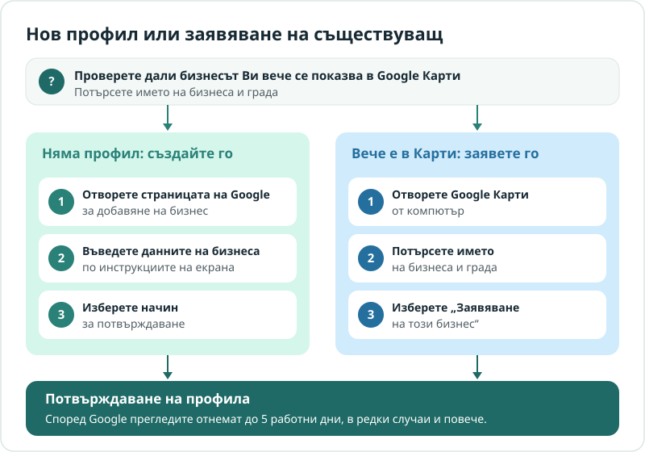
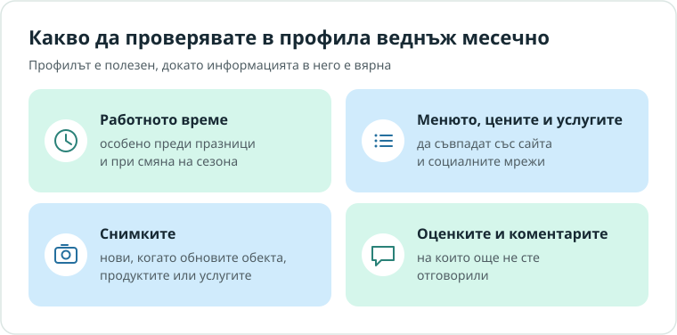

Съвети
Как да създадете и поддържате Google бизнес профил
Google бизнес профилът е информацията за бизнеса Ви, която клиентите виждат в Google Търсене и Google Карти: име, адрес, работно време, телефон, снимки, оценки и коментари. В търсачката хората го търсят и като „бизнес профил в гугъл“ или „гугъл бизнес профил“. Създаването, заявяването и потвърждаването му следват ясни стъпки, а поддръжката изисква редовна проверка на данните и отговори на клиентите.
Обновено
Какво е Google бизнес профил и защо е полезен?
Профилът събира на едно място данните, които клиентите проверяват, преди да се обадят или да дойдат: къде се намирате, кога работите и как да се свържат с Вас. Той се показва в Google Търсене и Google Карти, когато някой потърси бизнеса Ви.
Според Google, когато добавите и потвърдите бизнес профила си, клиентите могат да намират бизнеса Ви в Търсене и Карти. Добавянето или заявяването на бизнес става без парично заплащане.
Профилът е полезен за всеки бизнес, при който клиентите идват на място или търсят телефон и работно време: ресторант, хотел, салон, автосервиз, клиника или магазин. Подредбата в резултатите се определя от Google и никой не може да обещае конкретно място в Картите. Пълният и актуален профил помага на клиентите да решат дали да дойдат при Вас, когато вече са Ви открили.
Как се създава бизнес профил в гугъл?
Преди да създадете нов профил, проверете дали бизнесът Ви вече се показва в Google Карти, като потърсите името му и града. Ако го има, заявете съществуващия профил, за да не се появят два профила на едно място. Прочетете и условията на Google за това кои бизнеси могат да имат профил.
Ако бизнесът Ви още няма профил, създайте го така:

- Отворете страницата на Google за добавяне на бизнес и изберете „Добавете бизнеса си в Google“.
- Въведете данните на бизнеса, като следвате инструкциите на екрана.
- Изберете начин за потвърждаване и изпълнете стъпките, които Google Ви показва.
Използвайте точното име на бизнеса, същото като на табелата и на сайта Ви. Така клиентите разпознават от пръв поглед, че профилът е Вашият.
Какво да направите, ако бизнесът Ви вече е в Google Карти?
Ако при търсенето бизнесът Ви вече се показва в Google Карти, не е нужно да създавате нов профил. Можете да заявите съществуващия по следния начин:
- Отворете Google Карти от компютър.
- Потърсете името на бизнеса и града си.
- Изберете „Заявяване на този бизнес“ и продължете към потвърждаването.
Ако профилът вече е потвърден от друг човек, а Вие сте упълномощени да го управлявате, можете да подадете заявка за собственост до настоящия му собственик.
Как се потвърждава профилът и колко време отнема?
Потвърждаването на бизнес профила доказва пред Google, че Вие управлявате бизнеса. Когато потвърдите бизнеса си, придобивате собствеността върху бизнес профила, а наличните начини за потвърждаване зависят от типа на бизнеса Ви.
Google показва възможните начини по време на процеса, затова изберете този, който можете да изпълните веднага. Според Google прегледите за потвърждаване отнемат до 5 работни дни, а в редки случаи и повече.
Докато чакате, подгответе снимките и текстовете, които ще добавите след потвърждаването. Проверете и дали името, адресът и телефонът съвпадат с тези на сайта Ви и в профилите Ви в социалните мрежи.
Какво да попълните в профила?
Клиентите обикновено отварят профила, за да разберат дали работите в момента, как да стигнат до Вас и как да се свържат с Вас. Затова започнете с основните данни:
- Точното име на бизнеса.
- Адрес или местоположение, така че клиентите да Ви намерят на картата.
- Телефонен номер, на който някой отговаря в работно време.
- Уебсайт, ако имате такъв.
- Работно време, включително промените през празниците или през сезона.
- Снимки и видеоклипове на обекта, продуктите и услугите.
Добавяйте реални снимки на мястото и на това, което продавате. Те дават на клиента представа какво го очаква, преди да дойде.
Какво да проверявате в профила всеки месец?
Профилът е полезен, докато информацията в него е вярна. Ако работното време или менюто са остарели, клиентите може да намерят затворена врата или да очакват друга цена.
Веднъж месечно проверявайте следното:

- Работното време, особено преди празници и при смяна на сезона.
- Менюто, цените и услугите, така че да съвпадат със сайта и социалните мрежи.
- Снимките, като добавяте нови, когато обновите обекта, продуктите или услугите.
- Оценките и коментарите, на които още не сте отговорили.
Ако менюто или цените Ви се сменят често, удобно е да ги обновявате от едно място. Така в Google, в сайта и във Facebook не остава стара информация, която да обърква клиентите.
Как да отговаряте на оценки и коментари в Google?
Оценките и коментарите в Google се виждат от всеки, който отвори профила. Новите клиенти четат и самите коментари, и начина, по който бизнесът отговаря на тях.
Няколко правила помагат отговорите да звучат професионално:
- Отговаряйте и на положителните, и на критичните коментари.
- Благодарете конкретно, като споменете услугата или продукта, за който пише клиентът.
- При оплакване отговорете спокойно, признайте проблема и предложете да го решите извън профила.
- Не публикувайте лични данни на клиента и подробности за поръчката му.
Част от въпросите, които клиентите задават в коментарите, идват и като съобщения. Ако тези въпроси се повтарят в Messenger, Instagram или WhatsApp, на тях може да отговаря AI асистент, включително извън работно време. AI асистентът е програма, която отговаря автоматично по информацията на бизнеса Ви. Когато не може да помогне, асистентът записва контакта на клиента, за да се свържете с него.
Как Xtra AI може да поддържа профила вместо Вас?
Ако нямате време да следите профила редовно, Xtra AI може да поддържа профила жив с публикации, снимки и актуална информация всеки месец. Следим оценките и коментарите, които клиентите оставят в Google, и подготвяме отговор за Вашето одобрение.
Първата стъпка е безплатната диагностика и 30-минутен разговор, в който разглеждаме къде бизнесът Ви губи време. След него получавате оферта с приоритизирани решения и ясни еднократни цени. Срокът зависи от решението и го посочваме в офертата. Диагностиката не Ви обвързва с нищо. Работим без дългосрочни договори.
Запазете безплатна диагностика
Ако предпочитате да пишете, изпратете ни съобщение на contact@xtra-ai.com.
Често задавани въпроси
Плаща ли се за Google бизнес профил?
Google посочва, че можете да добавите или заявите бизнеса си без парично заплащане.
Колко дни отнема потвърждаването на профила?
Според Google прегледите за потвърждаване на бизнес профила отнемат до 5 работни дни. В редки случаи може да отнемат повече време.
Мога ли да заявя профил, който Google Карти вече показва?
Да. Потърсете името на бизнеса и града си в Google Карти от компютър, изберете „Заявяване на този бизнес“ и изпълнете стъпките за потвърждаване.
Ще се класира ли бизнесът ми по-напред в Google Карти?
Подредбата в Карти и Търсене се определя от Google и никой не може да обещае конкретна позиция. Пълният и актуален профил помага на клиентите да изберат Вас, когато Ви открият.
Колко често да обновявам профила?
Обновявайте го веднага, щом се промени работното време, менюто, цените или контактите. Веднъж месечно проверявайте също снимките, както и оценките и коментарите, на които още няма отговор.
Може ли Xtra AI да отговаря на оценките и коментарите вместо мен?
Xtra AI следи оценките и коментарите в Google и подготвя отговор за Вашето одобрение. Отговорът се публикува едва след като го одобрите.
Свързани услуги
- Социални мрежи и криейтивиПубликации по график след Вашето одобрение, брандирани криейтиви всеки месец и актуален Google профил.Научете повече
- AI асистентАсистент в Messenger, Instagram и WhatsApp, който отговаря на клиентите Ви денонощно с информацията на Вашия бизнес.Научете повече
- SEO оптимизацияТехническо SEO, on-page оптимизация и работа по връзките, с ясни еднократни цени в офертата след безплатната диагностика.Научете повече
Първата стъпка е безплатна
Диагностиката не Ви обвързва с нищо. Показваме Ви точно какво можем да поправим и колко ще струва.